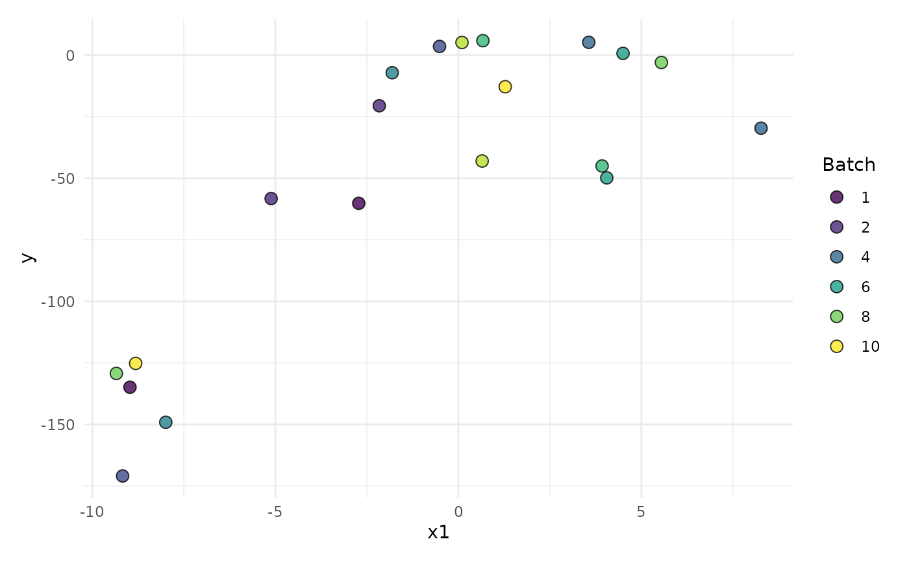

Plots for Optimization Instances
Source:R/OptimInstanceBatchSingleCrit.R
autoplot.OptimInstanceBatchSingleCrit.RdVisualizations for bbotk::OptimInstanceBatchSingleCrit.
The argument type controls what kind of plot is drawn.
Possible choices are:
"marginal"(default): Scatter plots of x versus y. The color of the points shows the batch number."performance": Scatter plots of batch number versus y"parameter": Scatter plots of batch number versus input. The color of the points shows the y values."parallel": Parallel coordinates plot. x values are rescaled by(x - mean(x)) / sd(x)."points": Scatter plot of two x dimensions versus. The color of the points shows the y values."surface": Surface plot of two x dimensions versus y values. The y values are interpolated with the supplied mlr3::Learner."pairs": Plots all x and y values against each other."incumbent": Plots the incumbent versus the number of configurations.
Arguments
- object
- type
(character(1)):
Type of the plot. See description.- cols_x
(
character())
Column names of x values. By default, all untransformed x values from the search space are plotted. Transformed hyperparameters are prefixed withx_domain_.- trafo
(
logical(1))
IfFALSE(default), the untransformed x values are plotted. IfTRUE, the transformed x values are plotted.- learner
(mlr3::Learner)
Regression learner used to interpolate the data of the surface plot.- grid_resolution
(
numeric())
Resolution of the surface plot.- batch
(
integer())
The batch number(s) to limit the plot to. The default is all batches.- theme
(
ggplot2::theme())
Theggplot2::theme_minimal()is applied by default to all plots.- ...
(ignored).
Examples
if (requireNamespace("mlr3") && requireNamespace("bbotk") && requireNamespace("patchwork")) {
library(bbotk)
library(paradox)
fun = function(xs) {
c(y = -(xs[[1]] - 2)^2 - (xs[[2]] + 3)^2 + 10)
}
domain = ps(
x1 = p_dbl(-10, 10),
x2 = p_dbl(-5, 5)
)
codomain = ps(
y = p_dbl(tags = "maximize")
)
obfun = ObjectiveRFun$new(
fun = fun,
domain = domain,
codomain = codomain
)
instance = oi(objective = obfun, terminator = trm("evals", n_evals = 20))
optimizer = opt("random_search", batch_size = 2)
optimizer$optimize(instance)
# plot y versus batch number
print(autoplot(instance, type = "performance"))
# plot x1 values versus performance
print(autoplot(instance, type = "marginal", cols_x = "x1"))
# plot parallel coordinates plot
print(autoplot(instance, type = "parallel"))
# plot pairs
print(autoplot(instance, type = "pairs"))
# plot incumbent
print(autoplot(instance, type = "incumbent"))
}
#> Loading required namespace: patchwork
#> Loading required package: paradox


 #> Registered S3 method overwritten by 'GGally':
#> method from
#> +.gg ggplot2


#> Registered S3 method overwritten by 'GGally':
#> method from
#> +.gg ggplot2

